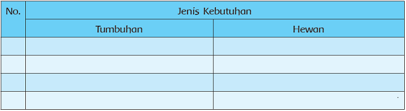
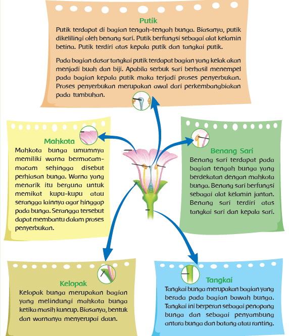

Ayo Cari Tahu
Sambil mengamati hewan dan tumbuhan yang ada di taman, Dayu mengingatkan teman-temannya tentang tugas yang diberikan guru, yaitu mereka harus mengamati hubungan antarmakhluk hidup, kemudian menuliskan dalam bentuk laporan. Bagaimana kalau kamu juga mencoba mengisi tabel berikut. Caranya adalah, isi jenis kebutuhan sehari-hari yang berasal dari hewan dan tumbuhan, kemudian tuliskan namanya pada kolom yang telah disediakan.

Setelah selesai berdiskusi, tiba-tiba seekor kupu-kupu melintas di hadapan mereka dan hinggap di atas sebuah bunga. Pandangan Dayu dan teman-teman tertuju pada kupukupu tersebut. Mereka mengamati apa yang dilakukan oleh kupu-kupu. Mengapa kupu-kupu senang mendatangi bunga?Ada apa di bunga tersebut? Mari kita cari tahu lebih jauh tentang bagian-bagian bunga dan fungsinya.
